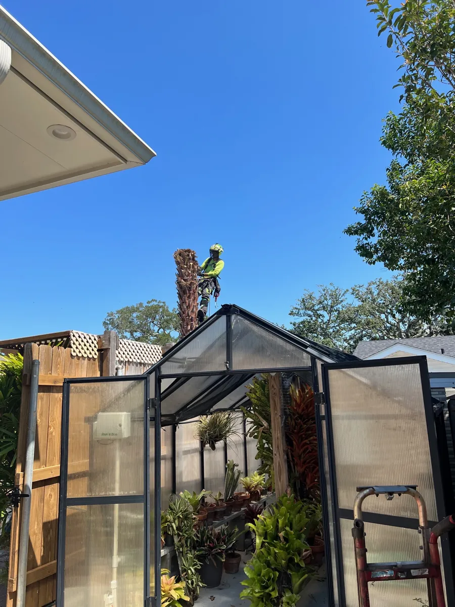

Tree Service in Kenner, LA
In Kenner, tree problems can show up suddenly, especially after a summer storm or heavy rain. A snapped branch along Loyola Drive or a leaning pine in Chateau Estates can turn a good-looking tree into a hazard.
Urgent or unsafe?Call an Arborist: (504) 732-0779

A Perfect Cut Tree Service offers full tree care in Kenner, including emergency removals, precision pruning, and stump grinding. We know Jefferson Parish soil, weather, and permitting.
- ISA Certified Arborist on Staff
- Emergency Calls Answered 24/7
- Onsite Estimates, No Pressure
Why Homeowners Choose A Perfect Cut
- Based in Metairie
- ISA Certified Arborist on Staff
- Emergency Calls Answered 24/7
- Equipment for Tight Spaces and Hazardous Trees
- Help With Permits, Insurance, and Utilities
We work throughout Kenner and know the city’s drainage issues and soft soils.
Tree Removal in Kenner, LA
A leaning oak over your roof or a tree too close to a power line needs careful removal. We assess each site, use the right equipment, including a crane when needed, and leave the yard clean.
Emergency Tree Service and Storm Cleanup in Kenner, LA
Storms in Kenner don’t keep business hours, and our emergency calls are answered 24/7. We remove fallen trees, secure your home, and clean up.

Additional Tree Services in Kenner
- Stump Grinding & Root Removal: We remove stumps below grade and clean up surface roots so you can replant or redesign the space.
- Tree Health & Hazard Assessments: Not sure if that leaning tree is a risk? Our arborist can assess it and recommend treatment or removal.
- Storm Prep & Recovery: We inspect your trees before hurricane season and remove weak limbs.
- Shrub & Hedge Pruning: Keep your landscaping sharp with regular pruning for shrubs, hedges, and ornamental trees.
- Tree Fertilization: Soil treatments matched to your trees and soil.
- Permitting & Construction Help: City codes or HOA rules? We’ll handle the paperwork.
Local Tree Issues in Kenner
Kenner has its own challenges: soggy ground, shallow roots, storm winds, and pests like beetles and caterpillars. Poorly drained spots can lead to root rot if trees aren’t monitored.
FAQs
Do I need a permit for tree removal in Kenner?
It depends on the tree and where it stands. Check with the City of Kenner before removal, and we can help with any permit paperwork.
When is the best time to prune trees in Kenner?
Late winter through early spring is ideal for most species. However, we also recommend pre-hurricane season pruning to minimize storm damage.
Can you grind the stump on the same visit?
Yes, in most cases stump grinding can be done on the same visit as the removal.
Do you coordinate with utility companies for hazardous trees?
Yes. If power lines are involved, we coordinate with Entergy or the local utility so the removal is done safely.
What types of trees grow best in Kenner’s conditions?
Species like live oaks, bald cypress, crepe myrtles, and Southern magnolias all thrive in our region’s soil and humidity.
Do you work with insurance claims after storm damage?
We do. We provide documentation, photos, and estimates to help you file your claim.
Do you have an ISA Certified Arborist?
Yes. Our team includes an ISA Certified Arborist trained to evaluate tree health, recommend preservation when possible, and guide safe removal when needed.

Where We Work in Kenner and Nearby
We work across Kenner, from older neighborhoods to newer subdivisions, including:
- Chateau Estates: Pruning and storm prep for mature trees.
- University City: Precision removals where space is tight.
- Rivertown: Removals and preservation work near homes and businesses.
- Kenner Heights: Pruning, removals, and cleanup after heavy rain.
- South Kenner: Hurricane prep, emergency cleanup, and long-term tree care.
- Across Jefferson Parish: Including parts of Metairie, River Ridge, and Elmwood.
Need tree work in your neighborhood? Call us at (504) 732-0779.
What to Photograph From a Safe Distance
Photos and video show us the tree, the property around it, how we would reach it, and any visible hazards.


Tree down or a broken limb?
Skip the photos and call. Calls are answered 24/7.
(504) 732-0779Office hours: Monday to Friday 7 AM to 5 PM, Saturday 7 AM to 3 PM, closed Sunday.

Ready to Show Us Your Tree?
Show us the tree. An arborist reviews what you send. Photos give us a first look. Some trees need an in-person visit before we can make a final recommendation.